RESOURCE GUIDE
The Mentor Pack
This very special package includes Darren Hardy’s top-selling Living Your Best Year Ever success planning system in workbook format, as well as Jim Rohn’s extraordinary audio programs, Challenge to Succeed, The Art of Exceptional Living, and Take Charge of Your Life.
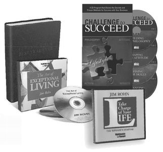
Living Your Best Year Ever
Outlines the specific plan that Darren developed for himself, synthesizing hundreds of books, seminars, trials, errors and victories into the best and proven strategies on how to design, execute, stick to and achieve big goals.
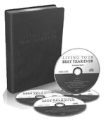
Your monthly supply of new ideas, inspiration, and resources that will continue to give you the competitive advantage in life. Each magazine comes with a SUCCESS CD, featuring interviews with Darren Hardy and today’s greatest achievers and leading success experts.
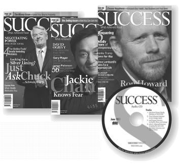
SUCCESS Book Summaries provide a sneak peek at the content of each featured book, with a special focus on chapters that resonate with entrepreneurs and achievers. With a subscription to SUCCESS Book Summaries, you’ll receive summaries of three featured books in printed, audio, and PDF formats each month. By reading and listening to the summaries, you’ll know whether the books are titles you’d like to add to your personal success library. Listen, read, and achieve more!
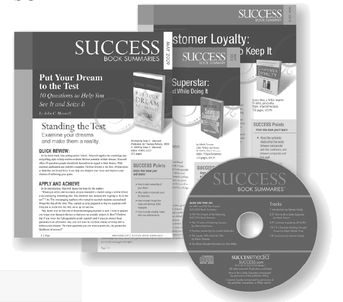
Gratitude Assessment
Three amazing people in my life are
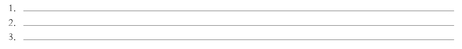
Three great things about my physical body are
Three great things about my home and where I live are
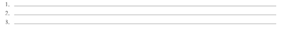
Three great things about where I work and what I do for a living are
Three great gifts of unique talent and skill I have been given are
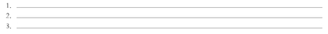
Three great gifts of knowledge and experience I have been given are
Three ways I have experienced “luck” in my life are
Three ways in which my life is wealthy, abundant and prosperous are
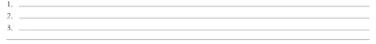
Core Values Assessment
Your values are your GPS navigation system for life. Getting them defined and properly calibrated is one of the most important steps in redirecting your life toward your grandest vision. The below series of questions will help you evaluate and refine what is truly important to you and what matters most in life. Answer each question thoughtfully, and then I will help you select the top half-dozen values for your life.
Who is the person I respect most in life?What are their core values?
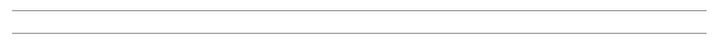
Who is my best friend, and what are his/her top three qualities?
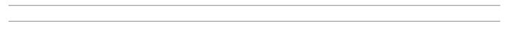
If I could have more of any one quality instantly, what would it be?
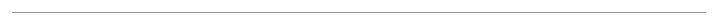
What are three things I hate? (e.g., cruelty to animals, credit card companies, deforestation, etc.)
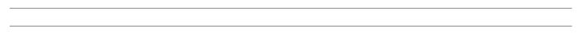
Which three people in the world do I dislike the most and why?
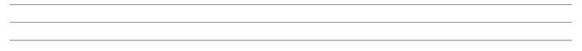
Which personality trait, attribute or quality do people compliment me on the most?
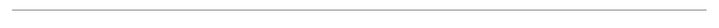
What are the three most important values I want to pass on to my children?
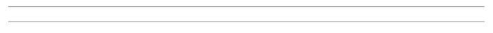
Life Assessment
Face the truth
There are no wrong answers, there is no grade, no rating, not even an interpretation of your responses other than your own thoughtful assessment. Be honest and truthful with yourself. Even when the truthful response is a little embarrassing or painful, remember that no one else need ever see it and that you never succeed by deceiving yourself.
Rate the following on a scale of 1 to 5, 1 being Least True and 5 being Most True:
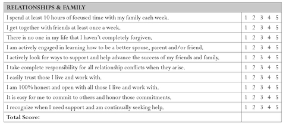
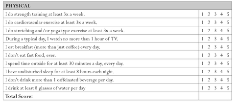
Habit Assessment
The magic comes from becoming the person you need to be in order to attract the people or results you wish to meet or achieve. Use the example below to determine the magic factor for achieving your goals.
EXAMPLE:
| GOAL: Earn an extra $100,000 in income in 2010 |
|---|
| General description of WHO I NEED TO BECOME: |
| • I am a disciplined master of time efficiency. |
| • I focus solely on high-payoff and high-productivity actions. |
| • I wake up an hour earlier and review my priority objectives each morning. |
| • I fuel my body properly and exercise four days a week so I am energetic and highly effective each work hour. |
| • I feed my mind ideas and inspiration that will support and bolster my passion. |
| • I surround myself with peers and mentors who elevate my expectations and prod me to rise to greater levels of discipline, commitment and achievement. |
| • I am a smart, confident and effective leader. |
| • I seek and cultivate the strength and greatness in everyone around me. |
| • I deliver excellence to my clients and continually find ways to ‛wow’ them, encouraging repeat transactions and abundant referrals. |
| New habits, disciplines or behaviors I need to START: |
| • Get up by 5am, feed my mind with positive material—30 minutes reading and 30 minutes of audio of something inspirational and instructional every day |
| • 30 minutes of quiet thinking time |
| • 30 minutes of planning time, eating a healthy fiber and protein rich breakfast |
| • Exercise for at least 30 minutes three times a week |
| • Calling on 10 new major accounts per week, checking in, servicing and further developing 10 existing clients per week, planning each day the night before, remembering birthdays and anniversaries of employees and clients, following news, blogs and updates of target accounts… |
| Existing healthy habits, disciplines or behaviors I need to EXPAND: |
| Recognizing my teammates when they achieve, delegating administrative tasks, going into the office early, being prompt, professional dress… |
| Poor habits or behaviors I need to STOP: |
| • Watching two hours of TV at night and listening to news in the car |
| • Attending unproductive meetings and saying yes to projects in conflict with my highest priorities |
| • Gossiping with colleagues, complaining about the economy, the market, team members or customers |
| • Taking personal calls or spending time on Facebook or other personal social media sites during the day |
| • Eating after 7:30pm, more than one glass of wine at night, extended lunches without clients... |
| Top three modifications and how I will implement it into my daily routine: |
| HABIT, BEHAVIOR OR DISCIPLINE | IMPLEMENTATION IN ROUTINE |
| Feed mind | Read 30 min first thing in morning while coffee brews. Listen to audio on commute to and from office. |
| Call on 10 new clients per week | Tues 2pm-5pm, Weds 10am-12pm, Thurs 1pm-4pm |
| Supportive associations | Join and commit to bi-weekly mastermind forum |
Weekly Rhythm Register
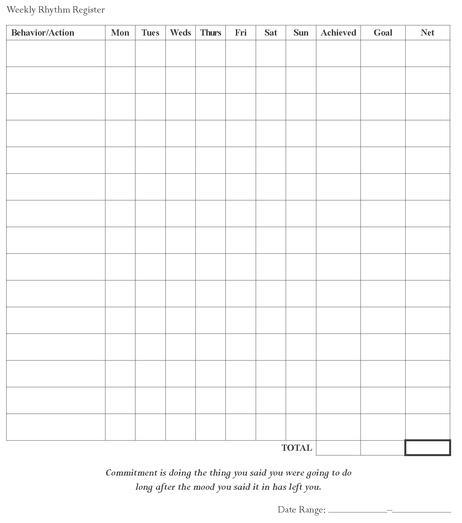
Input Influences
Assessing Your Input
Let’s look at all the potential ways you are feeding your mind less-than-supportive input. Just put a zero if you don’t do a particular activity.
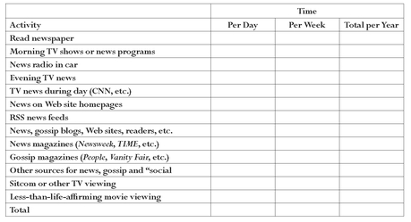
List three ways you will cut or significantly limit your input of negative, fear mongering, worrisome, gossip or needless social commentary input via newspapers, TV, radio, magazines, Web sites or otherwise.
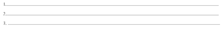
Your Plan to Feed Your Mind
What are the ways you will proactively feed your mind positive, inspirational, abundant, prosperity-minded ideas, information and input?
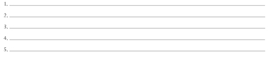
Association Evaluator
Assessing Your Current Associations
This is about the amount of TIME you spend with people outside of your immediate household (spouse and kids) and your strict work interactions (those in your office, unless you spend time outside of work with them). Evaluate their level of success in each of the areas below.
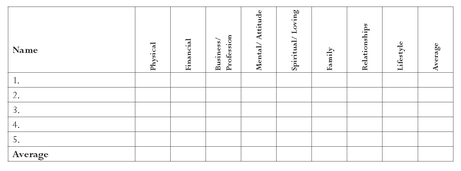
Now, organize your associations into the following three categories: dissociations, limited associations and expanded associations.
Disassociations
Maybe you need to disassociate from someone in the chart above, or anyone else who is involved in your life to any degree, who has a negative influence on you—mentally, emotionally, attitudinally, physically or otherwise. These are people who have a negative effect on what you talk about, what you eat, drink, do, watch, listen to, etc.
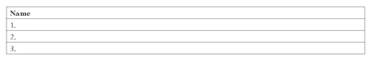